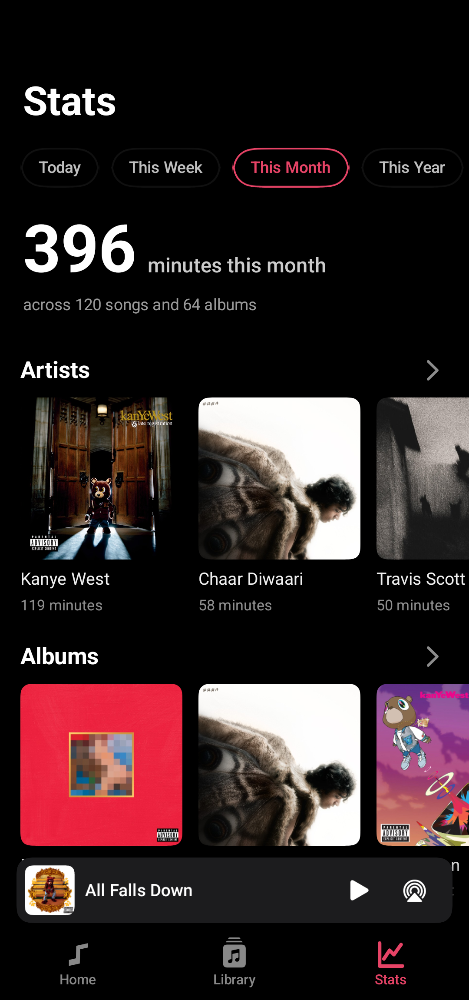
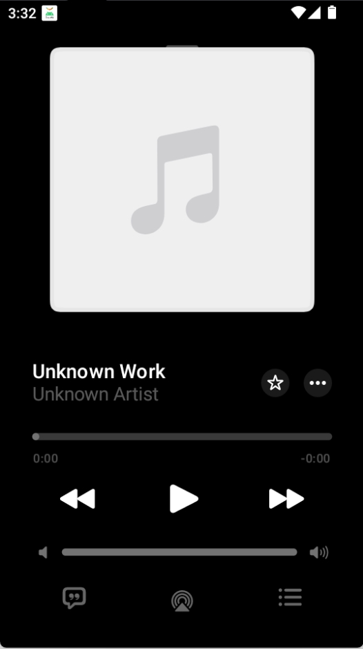

换手机丢了三年听歌记录后，我终于找到了不丢数据的播放器
一场换机引发的数据灾难让我重新审视本地播放器——原来统计可以导出、歌词能精确到逐字、甚至状态栏也能出词。这是一个折腾党从踩坑到安定的完整故事。
那个周二下午，我坐在工位上愣住了
三月的某个周二，我把旧手机的数据往新手机里搬。相册和微信都顺利迁移，唯独装了三年的音乐播放器——打开后是空的。
不是歌空了，歌单还在，但那串"累计播放时长 1278 小时"的数字消失了，月度播放榜回到了零，曾经反复循环的那几首歌在统计页里不再高亮。我盯着屏幕发了足足两分钟呆。
朋友甩了我三个截图
晚上跟同事吃饭吐槽，他没接我的话，直接甩了三张截图过来——一张是月统计页密密麻麻的柱状图，一张是播放界面歌词逐字点亮的动效，还有一张是状态栏挂着一行小字的截图。"换 Flamingo 吧，这是个主打本地数据不丢的播放器，Flamingo官网上还有完整的特性列表和动效演示，我用了一年半，上周刚换手机，统计数据跟着过来了。"
我一开始不信——播放器的统计数据还能跟着走？他又甩了一张设置页的截图："自己看，导出成文件，新机子导入就行。"
装好那天晚上，我先做了一件事
安装包从官方下载拿，整个安装加扫描本地曲库的过程不出十分钟。然后我第一件事不是放歌，是进设置找那个"导出统计"的按钮——就在设置里，三个选项整整齐齐：导出、导入、清空。

导出的文件不大，我顺手传到了网盘，还在电脑 D 盘也存了一份。三年的听歌数据，这次总算有了双重保险。之后翻了翻Flamingo文档，知道了这个功能从 v1.0.0 就有，不是什么新版本才加的高级功能——算是"基础但容易被忽视"的那种。
真正让我留下的是那些小细节
数据能导出是底线，但让我不卸载的是另外两件事。
第一件是滑动手势。以前切歌我总要点两下——先摸出手机，找到播放界面，点上一首或下一首。现在在通勤地铁上，不用完全掏出手机，在播放控制区左右滑一下就行；听到一半想跳过的歌，一划就进队列末尾，等当前这首放完自动接着下。两个手势都配了震动反馈，不用看屏幕也知道操作成没成。v2.0.0 还改进过队列手势的震动体验——这说明团队真的在打磨这些高频小动作，而不是做完就不管了。

第二件是歌词效果。我之前用的播放器歌词就是一行行往下滚，Flamingo 不一样——同样一份歌词放进去，逐字高亮、逐字上浮、翻译对照这些效果自动识别。看样本文档才知道，TTML 格式还能支持重叠行同时聚焦显示、倒计时、对唱区分这些更复杂的场景。英文歌的逐字点亮尤其明显，每个字从暗到亮的瞬间很有仪式感，而这一切只取决于歌词文件本身的格式——你给它逐字计时的 LRC，它就给你逐字点亮；你给它纯逐行的，就老老实实整行高亮。不搞花架子，看菜下饭。
折腾党忍不住试了那个 Xposed 方案
我手机上装了 LSPosed，顺手试了 Lyric Getter 的对接。原理很简单：Flamingo 作为被读取的一方，把当前歌词行通过钩子喂给 Lyric Getter，再交给下游模块显示——比如超级岛或者状态栏歌词。授权一下通知权限，启用模块作用域，播放时就能在状态栏看到实时滚动的歌词行。
这个方案的好处是灵活——不止 Flamingo 一个播放器能用，装个模块所有音乐应用都能统一取词。当然门槛也更高，得理解框架作用域、模块顺序这些概念，新手直接上手可能要花半小时排查。文档里也诚实说了：只是想快速出效果的话，可以先试 Super Lyric 的对接；魅族机型甚至可以直接走通知歌词，连框架都不用。
现在我养成了两个习惯
第一个，每季度导出一次统计数据。清空功能文档里明确写了"不可撤销"，虽然我还没用到它，但导出作为后悔药是必须的——万一哪天统计真的乱了想重算，先导出再清空是唯一安全的做法。
第二个，大规模清理曲库前先备份。上个月整理本地音乐删了两百多首重复文件，删之前先导出了一份，完事导入回来，播放时长和榜单数据纹丝不动。
三个月过去了
现在打开播放器第一眼先看的还是统计页——那个数字又慢慢长起来了，从零到现在已经有 147 小时。数字本身不重要，但它让我想起那个周二下午发呆的样子，也让我觉得选对播放器不只是"能不能放歌"的问题，而是"你愿不愿意把自己三年的听歌习惯交出去"的问题。
好播放器在你不知不觉的时候帮你守住了一些东西，等你回过神来，它已经成了生活里一个安静的存在。平时零散攒的用法心得和样本资料，顺手也在 GitHub、Gitee、GitCode 上各传了一份，搜 Flamingo 就能找到对应目录，算是资料留底。